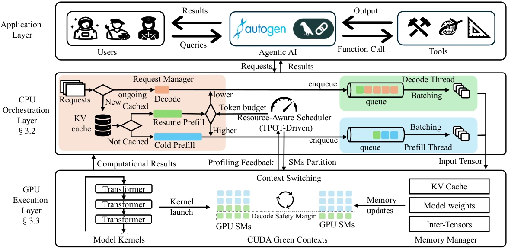

AgentServe: Algorithm-System Co-Design for Efficient Agentic AI Serving on a Consumer-Grade GPU
IEEE Transactions on Computers · 2026
AgentServe runs concurrent language-model agents on a single consumer GPU. It schedules prompt processing separately from token generation and reserves GPU resources for latency-sensitive decoding. The design aims to keep token delivery responsive while several agents share the same hardware.
Paper
Abstract
BibTeX
@article{zhang2026agentserve,
title = {{AgentServe: Algorithm-System Co-Design for Efficient Agentic AI Serving on a Consumer-Grade GPU}},
author = {Yuning Zhang and Yan Yan and Nan Yang and Dong Yuan},
year = {2026},
journal = {IEEE Transactions on Computers},
doi = {10.1109/TC.2026.3745924}
}